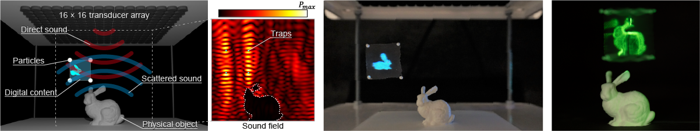

Ryuji Hirayama, Giorgos Christopoulos, Diego Martinez Plasencia and Sriram Subramanian Science Advances 8, eabn7614 (2022) [Paper link].
Recent advances in high-speed acoustic holography have enabled levitation-based volumetric displays with tactile and audio sensations. However, current approaches do not compute sound scattering of objects’ surfaces; thus, any physical object inside can distort the sound field. Here, we present a new technique that allows high-speed multi-point levitation even with arbitrary sound-scattering surfaces and demonstrate a volumetric display that works in the presence of any physical object. Our technique has a two-step scattering model and a simplified levitation solver, which together can achieve over 10,000 updates per second to create volumetric images above and below static sound-scattering objects. The model estimates transducer contributions in real-time by reformulating the boundary element method for acoustic holography, and the solver creates multiple levitation traps. We explain how our technique achieves its speed with minimum loss in the trap quality and illustrate how it brings digital and physical content together by demonstrating new interactive applications.
| 06/2022 | New Scientists (Science and technology publication), ‘3D rabbit ‘hologram’ created by levitating screen using sound waves’. |